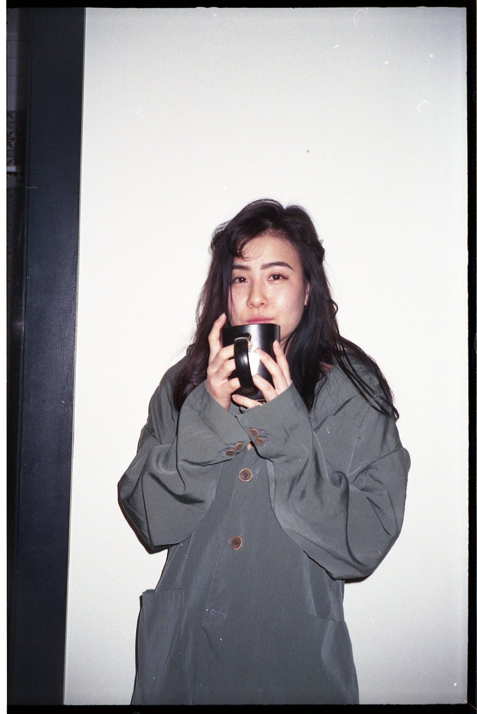
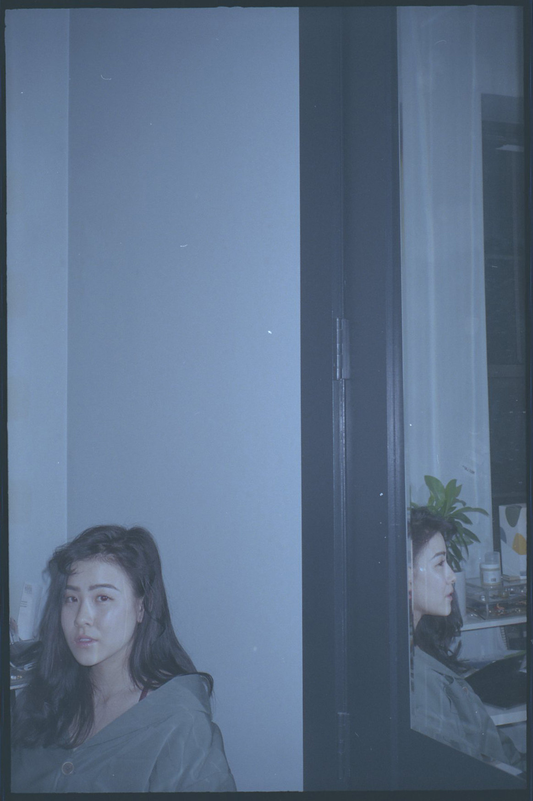
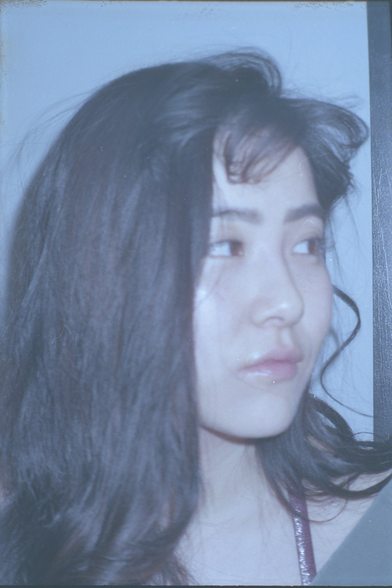
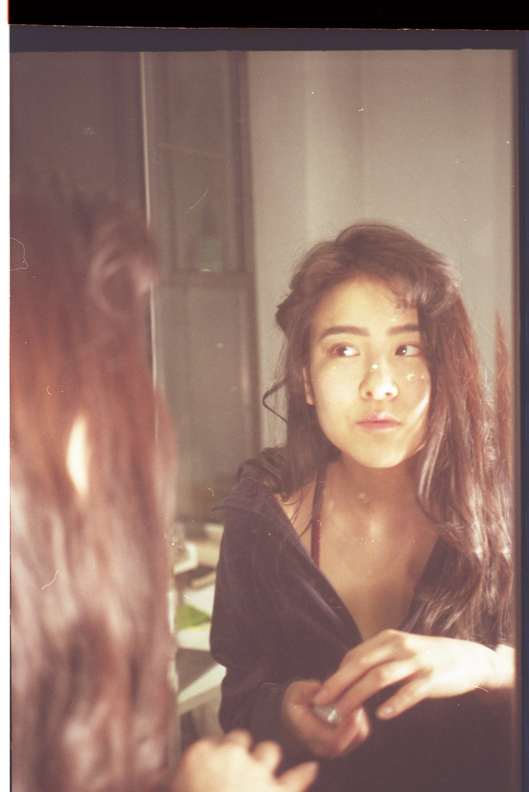
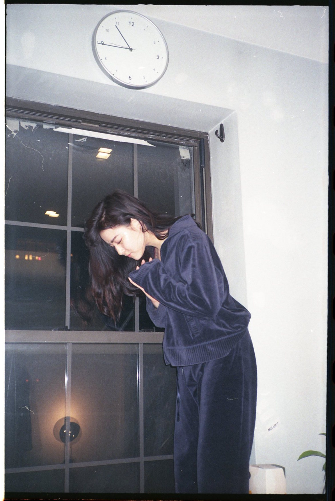

Juriel Furukawa
juriel is a sophomore at parsons studying communication design. she aspires to spread political and social messages through design and installation art.

Williamsburg, Brooklyn, NY
03.23.19 10:30 pm
Tell me about your background. What is your heritage and where did you grow up?
I was born in Colorado, but I was raised in California, Orange County. My parents are both from Japan, so I’m first generation.
What was your experience like growing up in California?
I was lucky to be from Orange County in specific, because it’s pretty diverse in the sense that there are a lot of Asian people, there is that community. But the moment I got out of that situation, I could really sense my racial identity. It pushed me out of the normal community, because even though I feel American because I was raised here, because of the way that I look, I’m treated differently. I think that’s something that really affects the way that you view yourself, and it can be confusing.
How has your experience been as an Asian woman navigating the city?
It can actually be quite scary. I’ve been followed many times. I’m sure a lot of girls experience this, but I think the things that are said are a little different. In Ubers, they would see me and then they start like, the race guessing. And then once they find out I’m Japanese, they start trying to get at me in really uncomfortable ways: by playing Japanese music, that’s happened multiple times, they reference anime, I had this one guy tell me how he knows how Japanese girls are submissive.
I’m someone who’s very talkative, and I’m naturally pretty friendly with strangers. But these experiences kind of made me really skeptical and closed off. I’ve been trying to unlearn that, trying to forgive these people. But also setting boundaries, sometimes you don’t know if it’s worth saying anything. Also I feel that I have to be friendly, because you never know what’s going to happen. I’m small, so visually I seem easy to take advantage of, but I think in some ways that made me stronger.
How so?
Because you know that you have to stand up for yourself. If you play into that character, it’s going to only make you more disadvantaged. It made me really question myself to see how that actually related to me, and then want to prove myself, because it doesn’t.

"Whenever I'm being approached by a guy or if I'm trying to approach a guy, not even in a romantic context, the two questions that I think are: one, 'Do they have a weird Japanese girl fetish?', and I have to look out for that. And two, 'Do they just not like Asian girls?'"

Do these ideas about yellow fever affect your confidence or self-esteem?
Completely, it does, because I always have to think about it. Before I even think about me as a person, I have to think about the external, the uncontrollable factors. But when I get over it, it’s really amazing. I love loving myself.
What do you think perpetuates the fetishizing of Asian women?
Mainly pornography. I think Japan is still pretty behind socially, America is much more progressive in that sense. Maybe women are a little bit more submissive there, that stereotype still kind of plays over. But when I see it, it makes me kind of angry, because that’s not what I stand for. I don’t like that feeling of that replay, for that to actually play out in present day. As someone who grew up in America and feels both American and Japanese, and also my own personality, I think that I’m someone who’s very strong and loud. When that character is put on me, I don’t agree with that.
Because it’s demeaning and false. With those ideas in place, do you date white men or mostly Asian men, or any other race?
I dated pretty diversely. I think it’s unavoidable to idealize white men or white women, it’s kind of ingrained in your brain. But once I learned those things, it made me more open to understanding that’s just something that’s played to me.
I had a really bad experience with an Asian guy, and then after that I didn’t want to date Asian men. And that’s kind of subconscious racism too. But I got into college, and then I just started to really hate that masculine figure. Especially when it was white, I felt a lot of anger towards it, I think because I just started seeing racism and fetishization way more overtly. At the same time I knew that it’s not right for me to think that way, because then I’m being racist in some ways.
But it‘s not the same kind of racism. Prejudice, maybe.
Definitely prejudice, but I didn’t want to feel that way, I wanted to be open. But I’ve had so many weird experiences with men, especially in the bedroom about consent, and I think that really affected me and kind of made me really turned off by sex.

Did you feel anything different in or about the relationships you had with white men?
I think that I sense my race a lot more, definitely. I’ve dated multiple white guys and it always came up that this person has yellow fever. Even if they didn’t, even if they just liked me as an individual, the people around them would say that. They would say it to him and then he would tell me, that kind of thing. Or if they hear about my boyfriend being white, they would ask me if he has an Asian fetish. That’s not something that would come up if I was white. And that’s something you have to be really concious of.
Relationships can be really difficult within that race dynamic. I’ve definitely felt like I’m always going to be less than the other person in the relationship, because of the way I’m viewed.
I think that is what makes it a lot harder to be confident with yourself. I really work hard every day to just completely love myself and not tie myself to the view of me being an Asian woman, being seen as less, because it sucks to always have to think, ‘This person only really admires me because of my race, or they’re just not going to like me.’
Can you share some experiences you’ve had with yellow fever or something you’ve learned?
I’m so careful about it that if I sense the slightest bit I will run the other direction. I think you can get into conversations about race pretty naturally, and then you can sense this person’s view—if they’re worldly or educated or if they have a very fixed idea because of what they’re fed. I’ve also struggled with whether or not I should take the position of educating this person and explaining it, which I end up doing because I feel like it’s morally conscious, but also it’s not really my responsibility.
How do you think these ideas are dangerous?
It divides people. It puts false ideas on someone, images that they don’t identify with, before you ever get to talk to them or understand them, and I don’t think that’s fair.
In sexual contexts, it can be completely dangerous. Asian women tend to be taken advantage of more. I’ve definitely feared for my life; I’ve been followed, made racist comments at, forcibly tried to be kissed, because they think that because I’m an Asian women, I won’t fight back. And I’d be quiet about it. That’s something that happens often, and I don’t think a lot of Asian women speak up about it. Even though statistically there is a certain percentage of Asian women who have been sexually harassed or raped, it’s probably going to be significantly higher than that, because culturally, those kind of ideals carry over from our parents.
Ideals about a woman’s role?
Yeah, you tend to take responsibility for those actions, even though it’s not the woman’s fault. You end up holding that in and it affects you, your mental health, future sexual relationships.

"I open the Uber and immediately someone is like, "Wow, you're Japanese. I love Japan. You eat noodles under an umbrella and the girls are super submissive and let's listen to Japanese music that you've never heard of, do you go to Little Tokyo?" Like maybe you could ask how my day is, that would be cool."
How do you think porn and the sex industry affects or creates these harmful perceptions?
For a lot of first-generation Asian girls or Asian men, they don’t talk about sex in the household. It’s very taboo, it’s very uncomfortable. What ends up happening, with a lot of teenagers too, is learning about sex education through pornography. If you don’t have a school system that teachers proper sex education, you’re never going to have a cohesive, holistic understanding about what sex and consent should be. It can be really dangerous to look to porn for sex ed, because it’s not realistic, women don’t get pleasured that way, it’s seen from the male perspective.
It’s entirely through the male gaze.
It is. And Japanese or Asian porn is a top category on PornHub or porn statistics, which means that watching men dominate Asian girls, that is being seen as the norm. Men and women are going to internalize that if they see it constantly, and that’s very dangerous.
Do you think there is a difference between the fetishization of Chinese and Japanese women specifically?
I can’t speak for Chinese women, but for me, because I’m Japanese and because that’s such a big category—I’ve heard many guys talk about Japanese porn saying that it’s the most weird or strange. It seems like there is more of a fetish for that, because I think there is more of an image of submissiveness. I hear about Japanese porn more than I do about Chinese porn.
I also feel like from the white perspective, they tend to generalize Asian communities together, so there’s not much of a difference to them.
This might get too historical, but I think because Japan didn’t open up to trade or to the rest of the world until the 1850s, Japanese people and Japanese design was much more exotified. Also in terms of progress, I think Japan is closer to being westernized than China is. I feel like it plays to the white experience more.
What do you think needs to change to move in the right direction?
It’s really difficult not to get angry about these things and in a lot of ways I think anger can move us forward. But in my opinion, I think the way to move us forward is to be open to conversing about these things and coming in with an open perspective. In terms of race, it can be really difficult to constantly have to explain yourself, but I find patience is a really important skill to have. We need to keep our humanity and still treat other people as humans. And try to educate people on this or encourage your peers to educate themselves.